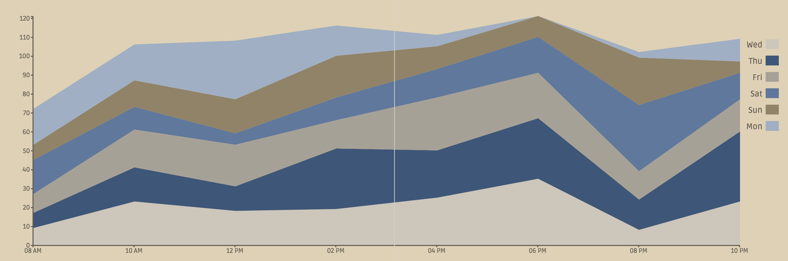
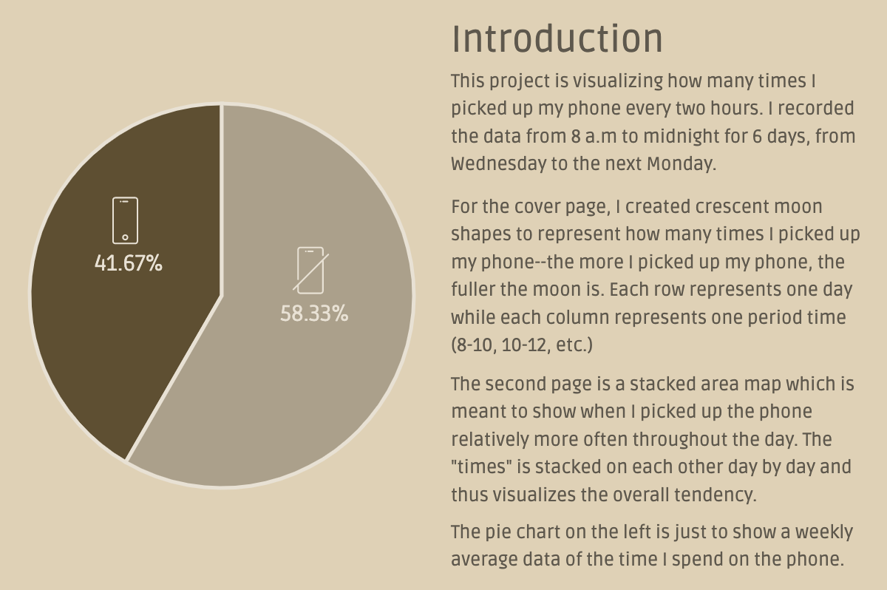

This project is a data visualization using d3.js. I recorded how many times I picked up my phone every two hours from 8 a.m to midnight for 6 days. It is meant to show how addictied I am to cell phone.
The cover page contains crescent moon shapes that represent how many times I picked up my phone on each day--the more I picked up my phone, the fuller the moon is. Each row represents one day while each column represents one period time(8-10, 10-12, etc.)
The middle spread is a stacked area map which is meant to show when I picked up the phone relatively more often throughout the day. The "times" is stacked on each other day by day and thus visualizes the overall tendency.
The pie chart on the back page is to show a weekly average percentage data of the time I spend on the phone.